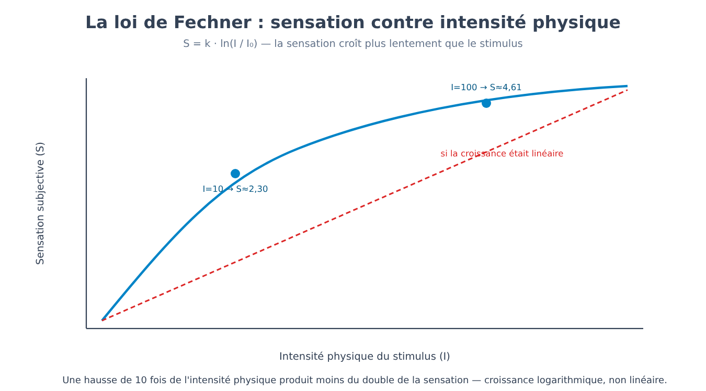
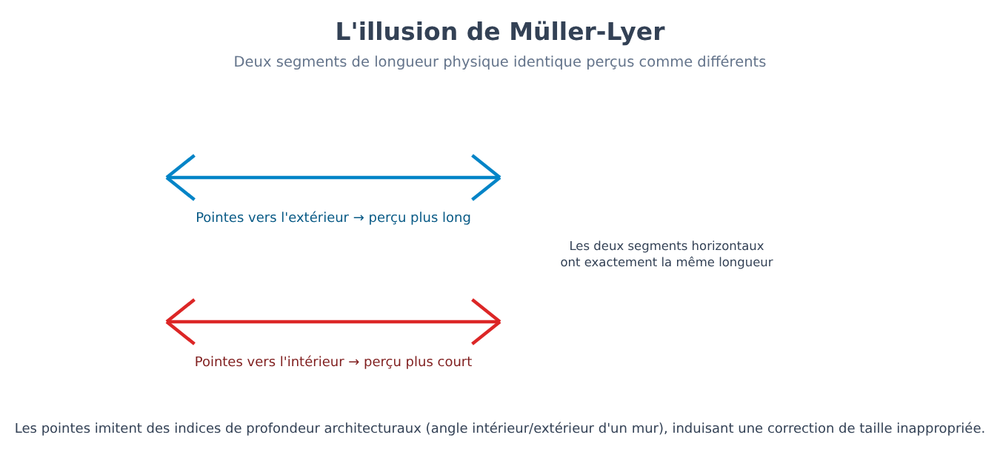
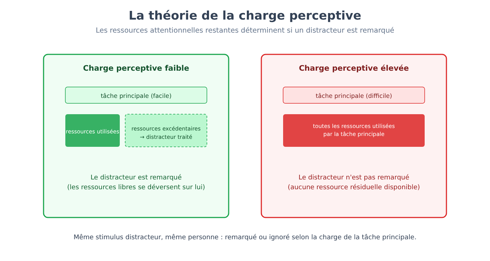
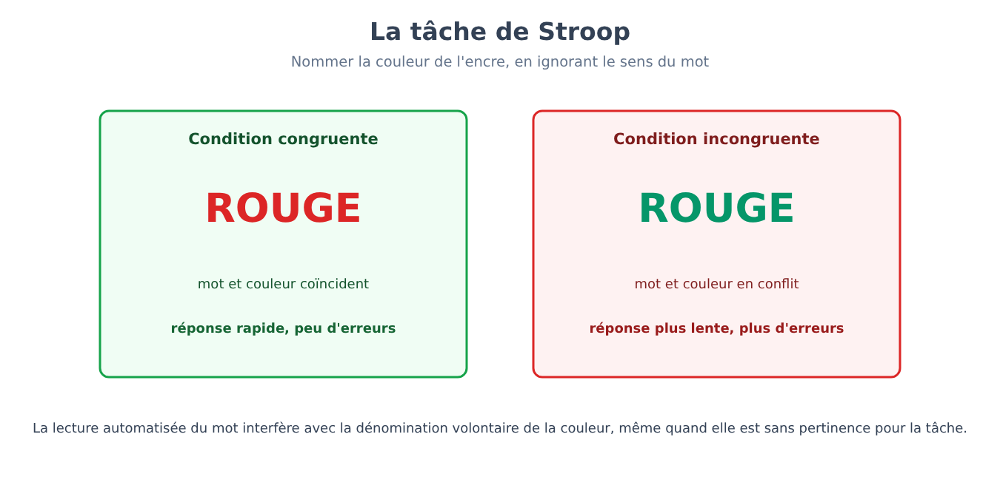
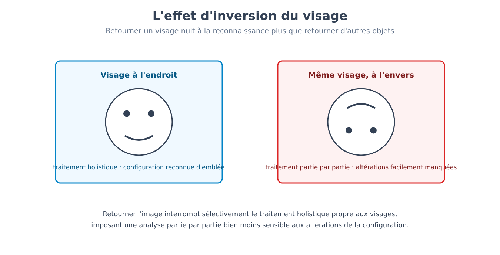
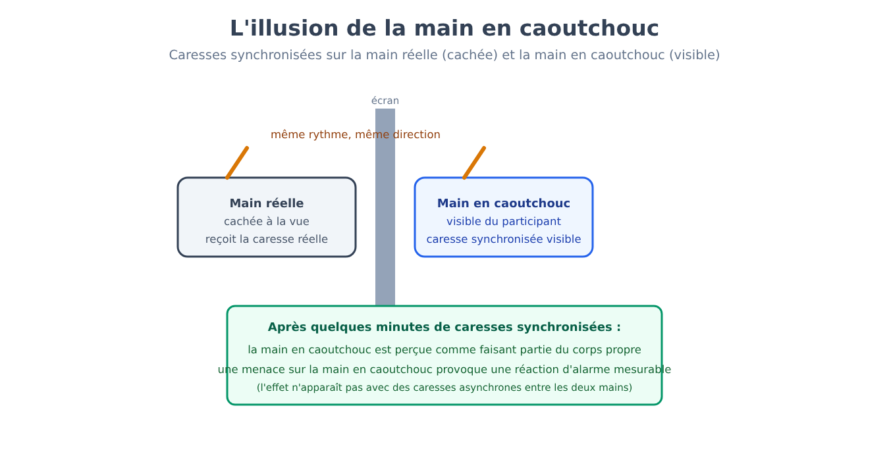

Partie V. Perception et attention
Chapitre 28 — De la transduction à la sensation
[EN DEUX MOTS]
Le chapitre 7 a présenté la psychophysique comme l'étude quantitative du rapport entre l'intensité physique d'un stimulus et l'intensité de la sensation perçue. Ce chapitre expose ce rapport dans son ensemble : comment on mesure un seuil, pourquoi la relation entre stimulus et sensation n'est pas linéaire, par quelle formule on la décrit, et pourquoi un système sensoriel cesse de signaler ce qui reste constant.
Le seuil absolu et le seuil différentiel
Un système sensoriel ne répond pas à n'importe quelle quantité d'énergie physique : il existe un seuil absolu (absolute threshold), l'intensité minimale d'un stimulus détectable dans la moitié des essais, en dessous de laquelle le stimulus est présent mais ne produit aucune sensation rapportable. Un second seuil, distinct et tout aussi central, est le seuil différentiel (difference threshold) ou différence juste perceptible (JND, just noticeable difference) : la plus petite variation d'intensité qu'un observateur parvient à détecter par rapport à un stimulus de référence.
La découverte cruciale, faite au milieu du XIXe siècle, est que le seuil différentiel n'est pas une quantité fixe, exprimée en unités absolues (grammes, décibels, candelas), mais une proportion constante de l'intensité de départ. Pour détecter qu'un poids a augmenté, il ne faut pas un incrément absolu fixe : il faut un incrément proportionnel à la taille du poids de départ. Soulever deux poids de 100 et 102 grammes permet de les distinguer ; soulever deux poids de 1000 et 1002 grammes, avec le même incrément absolu de 2 grammes, ne le permet pas — parce que le rapport entre l'incrément et la base est désormais trop petit.
[FORMULE]
La loi de Weber (Weber's law) formalise cette proportionnalité :
ΔI / I = k
Où :
• ΔI est la différence juste perceptible, c'est-à-dire le plus petit incrément d'intensité détectable.
• I est l'intensité du stimulus de référence.
• k est la fraction de Weber (Weber fraction), une constante propre à chaque modalité sensorielle (et non une valeur universelle) : environ 0,02 pour la discrimination de poids, environ 0,08 pour la luminosité, environ 0,05 pour l'intensité sonore.
Exemple de calcul. Avec k = 0,02 (discrimination de poids) et un poids de référence I = 200 g, la différence juste perceptible est :
ΔI = k · I = 0,02 · 200 g = 4 g
Il faut donc au moins 4 grammes de différence pour remarquer qu'un second poids est plus lourd que le premier. Mais avec un poids de référence dix fois plus grand, I = 2000 g, la même constante k = 0,02 exige :
ΔI = 0,02 · 2000 g = 40 g
Pas 4 grammes comme dans le cas précédent : la différence nécessaire a augmenté en proportion de la base, elle n'est pas restée fixe. C'est exactement le phénomène que décrit la loi.
À partir de la loi de Weber, le physiologiste et philosophe qui lui donna son nom en dériva une seconde relation, cette fois entre l'intensité physique du stimulus et l'intensité subjective de la sensation sur toute la gamme perceptible, et non plus seulement à la limite d'une discrimination isolée.
[FORMULE]
La loi de Fechner (Fechner's law) :
S = k · ln(I / I₀)
Où :
• S est l'intensité subjective de la sensation.
• I est l'intensité physique du stimulus.
• I₀ est l'intensité du seuil absolu, le point où la sensation commence à exister.
• k est une constante propre à la modalité sensorielle.
• ln est le logarithme naturel.
La conséquence pratique est que la sensation croît plus lentement que l'intensité physique : doubler la luminosité d'une lampe ne double pas la luminosité perçue, parce que le rapport est logarithmique, non linéaire.
Exemple de calcul. Posons k = 1 et I₀ = 1 (unités arbitraires, choisies seulement pour isoler l'allure de la fonction). À une intensité physique I = 10 (dix fois le seuil) correspond une sensation :
S = 1 · ln(10 / 1) = ln(10) ≈ 2,30
En portant l'intensité physique à I = 100 — dix fois plus intense qu'avant, cent fois le seuil — la sensation devient :
S = 1 · ln(100 / 1) = ln(100) ≈ 4,61
Une augmentation d'un facteur dix de l'intensité physique (de 10 à 100) a produit une augmentation de la sensation exactement du double (de 2,30 à 4,61, parce que ln 100 = 2 · ln 10), et non d'un facteur dix : c'est exactement cet écart entre croissance physique et effet subjectif que la formule décrit. Une augmentation énorme en termes physiques absolus (d'une ampoule à un phare) produit une augmentation de la sensation bien plus modeste que ne le laisserait penser l'augmentation physique — l'une des raisons pour lesquelles des échelles comme les décibels pour le son ou les diaphragmes pour l'exposition photographique sont elles-mêmes logarithmiques : elles sont construites pour correspondre à la manière dont le système perceptif répond réellement, et non à la manière dont l'énergie physique se distribue.

[LE PLAN DE L'EXPÉRIENCE]
Le problème. Mesurer un seuil exige un critère opérationnel : « le point où une sensation commence à exister » n'est pas observable directement, seulement inférable à partir du comportement rapporté par celui qui l'éprouve.
La méthode. Les méthodes psychophysiques classiques, mises au point au milieu du XIXe siècle et encore à la base de la psychophysique moderne, présentent des stimuli d'intensité connue, croissante ou décroissante (méthode des limites), ou des stimuli disposés dans un ordre aléatoire autour de la valeur attendue du seuil (méthode des stimuli constants), en enregistrant systématiquement dans quel pourcentage des essais le stimulus est détecté. Le seuil absolu est défini, par convention opérationnelle, comme l'intensité détectée dans 50 % des essais — ni 0 % ni 100 %, parce que la détection à un seuil physiologiquement réel est de toute façon probabiliste, et non un interrupteur tout ou rien.
Pourquoi c'est important. Cette approche a rendu mesurable, avec une précision numérique reproductible, un phénomène — l'expérience subjective d'une sensation — qui semblerait par nature soustrait à la mesure quantitative. C'est le modèle méthodologique dont toute la psychologie expérimentale, et pas seulement la perception, a hérité : rendre observable et numérique ce qui est vécu intérieurement, au moyen d'une tâche comportementale bien définie.
L'adaptation sensorielle
Un second phénomène, distinct du seuil mais tout aussi systématique, est l'adaptation sensorielle (sensory adaptation) : l'exposition prolongée et constante à un stimulus réduit progressivement la réponse du système sensoriel à ce stimulus, tandis que la sensibilité à un changement reste intacte ou même augmente. Celui qui entre dans une pièce sombre après avoir été dehors en plein soleil ne voit rien pendant les premières minutes ; la sensibilité visuelle augmente ensuite progressivement (adaptation à l'obscurité, dark adaptation) jusqu'à un facteur de dix mille ou plus par rapport à la condition initiale, un processus qui, dans l'œil humain, demande typiquement vingt à trente minutes pour s'achever.
[ATTENTION AU SAUT LOGIQUE]
On pense facilement à l'adaptation comme à une simple « fatigue » du système sensoriel, un fléchissement passif. Il n'en est rien : l'adaptation est un mécanisme actif et fonctionnellement utile, non un défaut. Un système sensoriel qui continuerait à signaler avec la même intensité un stimulus constant (l'odeur de sa propre maison, la pression des vêtements sur la peau, le bourdonnement de fond d'un appareil électroménager) gaspillerait des ressources sur une information désormais dépourvue de valeur prédictive — ce qui est resté identique n'appelle pas de nouvelle réponse. En s'adaptant au constant, le système reste libre de réagir avec toute sa sensibilité à ce qui change, qui est presque toujours l'information pertinente pour le comportement.
L'adaptation n'est pas un phénomène exclusivement visuel : celui qui s'immerge dans une piscine froide cesse de percevoir le froid comme intolérable après quelques minutes, non parce que la température de l'eau a changé, mais parce que les récepteurs thermiques ont réduit leur réponse à une condition désormais constante ; de même, une odeur intense perçue en entrant dans un lieu (une cuisine, une étable, un laboratoire de chimie) devient peu à peu moins perceptible pour celui qui y reste, alors qu'elle demeure pleinement évidente pour celui qui y entre à cet instant — la différence entre les deux observateurs ne tient pas à la sensibilité du nez, mais à l'histoire récente d'exposition à ce stimulus précis.
[MINI-CHRONOLOGIE]
• Milieu du XIXe siècle — Weber formule la loi qui porte son nom à partir d'expériences sur la discrimination de poids.
• 1860 — Fechner publie Elemente der Psychophysik, généralisant la loi de Weber en une relation entre stimulus physique et sensation subjective, et fondant ainsi la psychophysique comme programme de recherche quantitatif — l'antécédent historique présenté au chapitre 7.
• Années 1950-1960 — la théorie de la détection du signal (signal detection theory) perfectionne la méthode psychophysique classique, en séparant la sensibilité réelle d'un observateur de son critère de réponse (jusqu'où il est disposé à risquer une fausse alarme pour ne pas manquer un signal faible) — une distinction que les méthodes du XIXe siècle ne permettaient pas d'isoler.
• Aujourd'hui — les méthodes psychophysiques classiques restent l'outil de base pour calibrer les stimuli expérimentaux dans toute la recherche sur la perception et l'attention, y compris les techniques expérimentales des chapitres suivants de cette partie.
[L'ESSENTIEL DU CHAPITRE]
• Le seuil absolu est l'intensité minimale détectable dans 50 % des essais ; le seuil différentiel (JND) est la plus petite variation détectable par rapport à un stimulus de référence.
• La loi de Weber (ΔI/I = k) montre que le seuil différentiel est proportionnel, et non absolu : la même différence physique est détectable ou non selon la base de départ.
• La loi de Fechner (S = k · ln(I/I₀)) décrit une croissance de la sensation plus lente que celle du stimulus physique, de forme logarithmique.
• L'adaptation sensorielle n'est pas un fléchissement du système, mais un mécanisme qui libère des ressources pour répondre au changement, en ignorant ce qui est resté constant.
Chapitre 29 — La perception comme inférence
[EN DEUX MOTS]
La rétine reçoit une image bidimensionnelle, ambiguë et incomplète ; ce que l'on perçoit est un monde tridimensionnel, stable et plein d'objets reconnaissables. Ce chapitre expose pourquoi la perception doit être comprise comme un processus actif d'inférence à partir de données incomplètes, et non comme un enregistrement passif du monde — et pourquoi les illusions d'optique, loin d'être des défauts, sont la preuve la plus directe de ce mécanisme.
L'inférence inconsciente
L'image projetée sur la rétine est, d'un point de vue purement géométrique, radicalement sous-déterminée par rapport à la scène réelle : la même image rétinienne bidimensionnelle peut en principe correspondre à une infinité de scènes tridimensionnelles différentes (un petit objet proche projette la même image qu'un grand objet éloigné). Le système perceptif résout cette ambiguïté non en enregistrant passivement l'image, mais en lui appliquant, de manière rapide et non consciente, des hypothèses statistiques sur la façon dont le monde est typiquement fait — un processus décrit dès le milieu du XIXe siècle sous le nom d'inférence inconsciente (unconscious inference).
[ATTENTION AU SAUT LOGIQUE]
Le terme « inconscient » n'a ici rien à voir avec l'inconscient dynamique décrit au chapitre 8 : il ne s'agit pas de contenus refoulés parce que psychologiquement inacceptables, mais de calculs perceptifs qui restent simplement hors de portée de l'introspection, pour la même raison qu'on n'a pas conscience du calcul qui permet de garder l'équilibre en marchant. Le chapitre 31 reviendra sur cette distinction de manière explicite, en confrontant les deux emplois du terme « inconscient » que la psychologie a hérités de traditions très différentes.
Constances perceptives
Le résultat pratique de ce processus inférentiel est constitué par les constances perceptives (perceptual constancies) : la capacité de percevoir une propriété d'un objet comme stable alors que l'image rétinienne que cet objet projette change continuellement. La constance de la taille (size constancy) permet de percevoir une personne qui s'éloigne comme ayant la même taille, même si son image rétinienne se réduit progressivement — le système perceptif compense automatiquement la distance estimée. La constance de la couleur (color constancy) permet de percevoir une feuille blanche comme blanche aussi bien sous la lumière chaude d'une lampe à incandescence que sous la lumière froide d'un ciel nuageux, bien que la composition spectrale de la lumière qui arrive effectivement à l'œil soit, dans les deux cas, très différente : le système visuel estime et soustrait la couleur de la source d'éclairage, et pas seulement la couleur réfléchie par l'objet.
Les illusions comme fenêtres sur le mécanisme
Si la perception est inférence, une illusion d'optique n'est pas une erreur aléatoire du système visuel, mais le produit des mêmes règles inférentielles qui, dans l'immense majorité des cas réels, produisent une perception correcte — appliquées à une situation construite exprès pour que ces règles, cette fois, égarent.
[LE PLAN DE L'EXPÉRIENCE]
Le phénomène. Dans l'illusion de l'échiquier à l'ombre, deux cases d'un échiquier, physiquement identiques en termes de quantité de lumière réfléchie (mesurable avec un photomètre), sont perçues comme des nuances de gris nettement différentes — l'une claire, l'autre sombre — lorsque l'une des deux se trouve dans l'ombre projetée par un cylindre présent dans la scène.
L'interprétation. Le système visuel ne rapporte pas la luminance physique absolue d'une surface, mais estime quelle quantité de lumière cette surface réfléchirait si elle n'était pas à l'ombre, en appliquant une correction automatique pour l'éclairage estimé de la scène — exactement le même principe que la constance de la couleur, appliqué à la luminosité plutôt qu'à la couleur. La case « à l'ombre » est perçue comme plus claire que ne l'indique sa luminance physique, parce que le système la traite comme une surface claire faiblement éclairée, et non comme une surface gris foncé normalement éclairée.
Pourquoi c'est important. Aucune des deux perceptions n'est une « erreur » au sens courant du terme : le système visuel applique, correctement, la même règle statistique qui, dans le monde réel — plein d'ombres projetées — produit presque toujours la bonne estimation de la surface réelle d'un objet. L'illusion n'émerge que parce que le stimulus a été construit pour isoler artificiellement le cas où cette règle, sensée en elle-même, conduit à une conclusion différente de la mesure physique directe.
[CHIFFRES]
Un second exemple d'illusion, tout aussi classique, concerne directement la constance de la taille qui vient d'être décrite. Dans l'illusion de Müller-Lyer, deux segments de longueur physique identique — mesurable à la règle, tous deux par exemple de 5 cm — sont perçus comme de longueur différente selon les pointes de flèche placées à leurs extrémités : le segment dont les pointes sont tournées vers l'extérieur (en forme de queue d'aronde) est typiquement perçu comme plus long, jusqu'à environ 20 % dans de nombreux échantillons occidentaux, que le segment identique dont les pointes sont tournées vers l'intérieur. Une interprétation influente, mais contestée (l'illusion apparaît aussi chez les personnes aveugles de naissance et varie beaucoup selon les populations), relie l'effet précisément à la constance de la taille : les pointes vers l'extérieur ressemblent à l'arête d'un mur vu depuis un angle intérieur (comme le coin d'une pièce), les pointes vers l'intérieur à l'arête extérieure d'un bâtiment — deux indices de profondeur qui, dans l'expérience visuelle ordinaire, dans des environnements construits par l'homme, sont systématiquement associés à des distances différentes de l'observateur, ce qui amène le système visuel à appliquer, même dans ce cas bidimensionnel et dépourvu de véritable profondeur, la même correction de taille qu'il appliquerait à une scène tridimensionnelle réelle.

Organisation perceptive et codage prédictif
Avant même de reconnaître un objet précis, le système visuel doit résoudre un problème plus élémentaire : quelles portions de l'image rétinienne appartiennent au même objet, et lesquelles à des objets différents. Les principes d'organisation perceptive identifiés au début du XXe siècle par l'école de la Gestalt — regroupement par proximité, par similarité, par continuité de contour, et la distinction entre figure (ce qui apparaît comme objet, au premier plan) et fond — restent aujourd'hui descriptivement exacts, même si le débat contemporain les considère non comme des principes primitifs indépendants, mais comme des conséquences observables d'un processus inférentiel plus général fondé sur des régularités statistiques du monde visuel (les bords d'un même objet tendent, dans le monde réel, à être continus, proches et semblables par leur texture).
Le cadre théorique contemporain qui généralise cette idée est le codage prédictif (predictive coding) : le cerveau n'élaborerait pas l'information sensorielle à partir de zéro à chaque instant, mais maintiendrait en permanence un modèle prédictif de ce qu'il s'attend à percevoir, le comparerait à l'entrée sensorielle qui arrive et ne propagerait vers le haut, pour un traitement ultérieur, que l'écart entre prévision et réalité (l'erreur de prédiction, le même concept déjà rencontré au chapitre 22 à propos de la dopamine, appliqué ici non à la récompense mais à la perception elle-même). Un monde visuel prévisible — une pièce familière, immobile — demande donc, selon ce modèle, relativement peu de traitement actif, parce que la prévision coïncide presque parfaitement avec l'entrée ; un changement inattendu génère une ample erreur de prédiction, et c'est précisément ce signal qui capte le traitement suivant et, souvent, l'attention — le thème du prochain chapitre.
[L'ESSENTIEL DU CHAPITRE]
• La perception est un processus d'inférence active à partir d'une image rétinienne ambiguë, et non un enregistrement passif du monde — un principe appelé inférence inconsciente, sans rapport avec l'inconscient psychanalytique.
• Les constances perceptives (de taille, de couleur) montrent le système perceptif compensant activement des variables comme la distance et l'éclairage pour restituer des propriétés stables de l'objet.
• Les illusions d'optique ne sont pas des erreurs aléatoires, mais le produit des mêmes règles inférentielles qui produisent normalement des perceptions correctes, appliquées à des stimuli construits exprès pour les isoler.
• Le codage prédictif propose que le système perceptif compare continuellement prévision et entrée sensorielle, en propageant surtout l'erreur de prédiction — reliant la perception au même principe computationnel rencontré à propos de la dopamine.
Chapitre 30 — Attention
[EN DEUX MOTS]
À chaque instant, la quantité d'information sensorielle disponible excède énormément ce qui peut être traité en détail. Ce chapitre expose comment le système cognitif sélectionne ce qu'il traite, où se situe cette sélection le long du flux de traitement, et comment une sélection efficace peut produire une cécité surprenante à l'égard de ce qui reste hors du foyer attentionnel.
Le problème de la sélection
L'attention sélective (selective attention) est le mécanisme qui privilégie un sous-ensemble de l'information sensorielle disponible pour un traitement plus approfondi, au détriment du reste. Le cas le plus cité est ce qu'on appelle l'effet cocktail party : dans une pièce bondée et bruyante, il est possible de suivre une seule conversation en ignorant les autres voix environnantes, et pourtant son propre prénom prononcé dans une conversation ignorée capte l'attention dans une minorité consistante de cas (dans le travail classique de Moray, environ un sur trois ; plus souvent chez ceux qui ont une faible capacité de mémoire de travail) — signe que l'information non sélectionnée n'est pas entièrement perdue, mais est traitée à un niveau suffisant pour reconnaître un contenu pertinent, même sans atteindre la pleine conscience.
[QUESTION CONTROVERSÉE]
Où se produit exactement la sélection le long du parcours du traitement ? Les premiers modèles proposaient un filtre précoce (early selection) : l'information non attendue serait bloquée presque immédiatement, avant même d'être analysée pour son sens — une explication compatible avec l'idée que suivre une seule conversation exige d'écarter le reste sur-le-champ. Mais le fait que son propre prénom capte l'attention même dans un canal ignoré est difficile à concilier avec un blocage aussi précoce : si le canal non sélectionné était effectivement bloqué avant l'analyse du sens, le prénom prononcé là ne devrait jamais être reconnaissable. Des modèles ultérieurs proposent plutôt une atténuation qu'un blocage net : l'information non sélectionnée est traitée, mais avec un signal affaibli, suffisant pour reconnaître des contenus de forte pertinence personnelle (son propre prénom, un mot d'alarme) mais non pour en suivre le sens complet. Le débat reste ouvert sur la profondeur — jusqu'à quel niveau d'analyse sémantique — à laquelle l'information ignorée est effectivement traitée avant d'être écartée, et la réponse semble dépendre en partie de l'exigence de la tâche principale, thème de la section suivante.
La charge attentionnelle
Une explication influente de cette contradiction apparente est la théorie de la charge perceptive (perceptual load theory) : quand la tâche principale impose une charge de traitement élevée (chercher un objet précis parmi beaucoup de semblables, par exemple), les ressources attentionnelles disponibles s'épuisent avant d'atteindre les stimuli non pertinents, qui restent donc effectivement non traités ; quand la tâche principale est simple et laisse des ressources disponibles, ces ressources « en excès » se déversent automatiquement sur les stimuli environnants, même lorsque la consigne est de les ignorer. La même personne, avec le même stimulus distracteur, peut donc le remarquer ou ne pas le remarquer selon l'exigence de la tâche qu'elle accomplit à ce moment-là — non en raison d'une différence de volonté ou de discipline, mais d'une différence de ressources de traitement résiduelles.

Cécité à l'inattendu et cécité au changement
Les conséquences pratiques d'une sélection attentionnelle stricte peuvent être aussi surprenantes que contre-intuitives.
[LE PLAN DE L'EXPÉRIENCE]
Le plan. On demande à un groupe d'observateurs de regarder une courte vidéo dans laquelle deux équipes, l'une en maillot blanc et l'autre en maillot noir, se passent un ballon de basket, et de compter à voix haute combien de passes effectue l'équipe blanche — une tâche qui exige une attention soutenue et sélective envers les joueurs en blanc, en ignorant ceux en noir. Au milieu de la vidéo, une personne déguisée en gorille traverse lentement la scène, s'arrête au centre de l'image, se frappe la poitrine avec les mains, et poursuit son chemin — visible pendant quelques secondes dans une vidéo d'un peu plus d'une minute.
Le résultat. Environ la moitié des observateurs, occupés à compter, ne rapportent pas avoir vu le gorille lorsqu'on les interroge juste après le visionnage — et ils se montrent surpris, souvent de façon marquée, en revoyant la vidéo une seconde fois sans la tâche de comptage.
Pourquoi c'est important. Le phénomène, appelé cécité à l'inattendu (inattentional blindness), démontre que la conscience visuelle d'un stimulus — même d'un stimulus saillant, inhabituel et projeté pendant plusieurs secondes au centre du champ visuel — n'est pas garantie par la seule présence physique du stimulus sur la rétine : elle exige que l'attention soit effectivement dirigée vers lui. Une tâche qui absorbe pleinement les ressources attentionnelles disponibles (compter les passes entre les joueurs en blanc, en excluant activement ceux en noir) peut laisser totalement « invisible », au sens subjectif du terme, un stimulus parfaitement visible du point de vue optique.
Un phénomène complémentaire, la cécité au changement (change blindness), montre que même une comparaison directe entre deux versions d'une même scène, alternées avec une brève interruption visuelle entre l'une et l'autre, peut laisser inaperçu un changement substantiel (un objet qui disparaît, une couleur qui change, une personne qui est remplacée) si ce changement ne tombe pas à l'endroit exact sur lequel l'attention est dirigée à ce moment-là — une démonstration supplémentaire que la représentation visuelle maintenue d'un instant à l'autre est beaucoup plus sélective et moins détaillée que ne le laisse croire l'expérience subjective, qui semble fournir un tableau visuel complet et continu.
[ATTENTION AU SAUT LOGIQUE]
Il est facile de conclure de ces expériences que la perception visuelle est, en général, « pauvre » ou peu fiable. La conclusion plus précise est différente : le système visuel construit, d'un instant à l'autre, une représentation détaillée seulement de ce qui est au centre de l'attention, en conservant du reste de la scène une représentation plus sommaire — suffisante, dans la plupart des situations quotidiennes, pour s'orienter sans que le changement soudain de quelque chose d'insignifiant constitue un problème pratique. Le coût de cette stratégie efficace n'apparaît que dans des conditions expérimentales construites exprès pour le mettre en évidence, ou dans des situations réelles analogues (une tâche visuelle absorbante au volant, par exemple) où l'enjeu de ce qui échappe à l'attention peut être bien plus sérieux qu'un gorille non remarqué dans une vidéo.
[IDÉE REÇUE]
L'idée de pouvoir « faire plusieurs choses à la fois de façon efficace » — lire des messages en suivant une réunion, regarder une vidéo en étudiant — est extrêmement répandue, en particulier chez ceux qui se décrivent comme habitués à le faire régulièrement. Les preuves expérimentales disponibles vont dans la direction opposée pour la grande majorité des tâches qui exigent un traitement cognitif actif (et pas seulement moteur) : ce qu'on appelle couramment « multitâche » est presque toujours, du point de vue de l'attention, une rapide alternance séquentielle entre une tâche et l'autre, et non un traitement simultané — avec un coût mesurable à chaque changement de tâche (le temps et la précision perdus à réorienter l'attention), qui s'ajoute au temps total employé et aux erreurs commises, par rapport au fait d'accomplir les mêmes tâches en séquence pure. Des études comparant des personnes qui se décrivent comme des « multitâcheurs médiatiques » habituels avec des personnes qui le font rarement montrent en outre, de façon surprenante, que les premières, dans une étude influente (Ophir et collègues, 2009), tendaient à obtenir de moins bons, et non de meilleurs, résultats dans des tâches de laboratoire exigeant d'ignorer l'information non pertinente — ce qui est cohérent avec l'idée qu'une habitude fréquente de changer de tâche n'entraîne pas une capacité de traitement parallèle (que le système attentionnel humain ne possède pas pour les tâches complexes), mais rend plutôt moins efficace le filtre qui exclut normalement les distractions.
Qu'est-ce qui, exactement, détermine si un contenu entre dans la conscience ou non est une question qui excède les limites de ce chapitre : le chapitre 78 (Partie XIII) y reviendra directement, en utilisant les outils conceptuels introduits ici — attention, charge, sélection — comme base d'une question encore plus large sur ce qui distingue un traitement conscient d'un traitement qui reste, par définition, hors de la conscience : le thème du prochain chapitre.
[L'ESSENTIEL DU CHAPITRE]
• L'attention sélective permet de traiter en détail seulement un sous-ensemble de l'information sensorielle disponible ; le reste est traité de manière plus superficielle, pas nécessairement annulé (effet cocktail party).
• La théorie de la charge perceptive explique pourquoi le même stimulus distracteur est remarqué ou ignoré selon la quantité de ressources attentionnelles que la tâche principale laisse disponibles.
• La cécité à l'inattendu (expérience du gorille) et la cécité au changement démontrent que la conscience visuelle d'un stimulus exige une attention dirigée, et pas seulement sa présence physique sur la rétine.
• Ce qui distingue un contenu traité de manière inconsciente d'un contenu qui atteint la pleine conscience sera repris directement au chapitre 78.
Chapitre 31 — Processus non conscients
[EN DEUX MOTS]
Une bonne partie du traitement de l'information se produit sans que la personne en ait conscience. Ce chapitre distingue avec soin ce que cette affirmation peut légitimement soutenir de ce que la communication de vulgarisation lui a fait soutenir : l'amorçage sémantique est un phénomène robuste et bien répliqué, l'amorçage comportemental à grande échelle s'est en grande partie effrité sous le contrôle des réplications, et la comparaison avec l'inconscient psychanalytique du chapitre 8 exige une distinction explicite, et non une équivalence implicite.
Amorçage : deux phénomènes aux destins très différents
L'amorçage est le phénomène par lequel l'exposition à un stimulus influence, de manière mesurable mais souvent non consciente pour celui qui l'éprouve, la réponse à un stimulus ultérieur. Sous cette étiquette commune cohabitent pourtant des phénomènes d'un niveau de solidité empirique très différent.
L'amorçage sémantique — l'observation selon laquelle le mot « infirmière », vu ou entendu juste avant, accélère la reconnaissance du mot apparenté « médecin » par rapport à un mot non apparenté — est parmi les résultats les plus répliqués de toute la psychologie cognitive : il reflète l'activation automatique de représentations sémantiquement liées au sein d'un réseau conceptuel, un mécanisme qui sous-tend aussi des phénomènes appliqués comme la saisie semi-automatique de texte.
L'amorçage comportemental (ou « social ») avance une affirmation bien plus ambitieuse : que l'exposition à des concepts abstraits puisse modifier des comportements moteurs complexes, et pas seulement des temps de réponse à une tâche linguistique. L'exemple historiquement le plus cité est l'observation que des participants exposés à des mots associés à la vieillesse (âgé, rides, Floride — l'État américain associé aux retraités) marchaient ensuite plus lentement vers la sortie du laboratoire que des participants exposés à des mots neutres.
[TIENT-ON ENCORE ?]
L'amorçage comportemental sur la vitesse de marche reste l'un des exemples les plus cités dans les manuels de vulgarisation psychologique, mais son statut empirique actuel est bien différent de sa réputation. L'étude originale, publiée au milieu des années 1990, rapportait un effet de très grande taille sur de petits échantillons (une trentaine de participants par expérience, une quinzaine par condition). Une tentative de réplication directe (Doyen et collègues, 2012), avec un échantillon plus large et des capteurs à infrarouge à la place du chronomètre manuel, n'a pas reproduit l'effet, qui n'apparaissait que lorsque l'expérimentateur s'attendait à le voir. Les méta-analyses sur l'amorçage comportemental en général, corrigées du biais de publication, estiment des effets beaucoup plus petits que l'effet original, et proches de zéro dans les études préenregistrées — dans lesquelles le plan expérimental, l'analyse statistique et les prédictions sont déclarés publiquement avant la collecte des données, pour exclure la possibilité d'adapter l'analyse au résultat obtenu. Le champ de l'amorçage comportemental à grande échelle est aujourd'hui considéré en grande partie comme non répliqué : beaucoup de résultats publiés comme des confirmations étaient des effets faibles, lus comme un soutien à la théorie même quand les réplications ne les reproduisaient pas.
[IDÉE REÇUE]
Une idée apparentée, plus répandue encore dans la culture populaire, est que des messages cachés sous le seuil de la perception consciente — une image isolée dans un film, une phrase gravée à l'envers dans un enregistrement musical — pourraient induire des comportements spécifiques et complexes, comme acheter un produit ou adopter une attitude. Le traitement subliminal est un phénomène réel dans des limites bien définies et restreintes : un stimulus présenté pendant une fraction de seconde, trop brève pour être identifié consciemment, peut produire des effets mesurables mais modestes et de très brève durée sur une tâche immédiatement suivante — par exemple accélérer légèrement la reconnaissance d'un mot apparenté, selon la même logique que l'amorçage sémantique. Il n'existe en revanche aucune preuve solide qu'un stimulus subliminal puisse induire des décisions comportementales complexes, durables ou contraires à une motivation préexistante — l'idée d'une publicité subliminale capable de persuader contre la volonté du consommateur reste, en l'état actuel des preuves, un mythe d'origine journalistique plus qu'une découverte scientifique étayée.
Automatisme
Un troisième phénomène, distinct à la fois de l'amorçage et du traitement subliminal, est l'automatisme : l'exécution d'un processus cognitif appris de façon si efficace qu'il n'exige plus d'attention contrôlée, souvent au point de devenir difficile à inhiber volontairement même lorsqu'il interfère avec la tâche en cours.
[LE PLAN DE L'EXPÉRIENCE]
La tâche. Dans la tâche de Stroop, on montre au participant une série de mots qui sont des noms de couleurs (par exemple « rouge », « vert », « bleu »), chacun imprimé dans une couleur d'encre qui peut coïncider avec le sens du mot ou non (le mot « rouge » imprimé à l'encre verte), avec la consigne de nommer la couleur de l'encre le plus rapidement possible, en ignorant le sens du mot.
Le résultat. Le temps de réponse augmente systématiquement, et les erreurs deviennent plus fréquentes, lorsque le mot et la couleur de l'encre sont incongruents par rapport au cas où ils coïncident — bien que la tâche exige explicitement d'ignorer le sens du mot.
Pourquoi c'est important. La lecture d'un mot familier est devenue, avec des années de pratique, un processus si automatisé qu'il se déclenche involontairement même lorsqu'il est non pertinent et contre-productif pour la tâche assignée, interférant avec un processus — nommer une couleur — qui exige au contraire une attention contrôlée. La tâche de Stroop reste aujourd'hui un outil expérimental de référence pour mesurer l'efficacité du contrôle inhibiteur, c'est-à-dire la capacité de supprimer une réponse automatique dominante au profit d'une réponse moins automatique mais requise par le contexte.

Deux inconscients, et non un seul
[QUESTION CONTROVERSÉE]
Le chapitre 8 a exposé l'hypothèse psychanalytique de l'inconscient : un réservoir de contenus activement tenus hors de la conscience parce que psychologiquement inacceptables, qui continuent néanmoins d'influencer la pensée et le comportement et peuvent, en principe, être ramenés à la conscience par un travail d'interprétation. L'inconscient cognitif décrit dans ce chapitre est une entité conceptuellement différente sur au moins trois points. Premièrement, le mécanisme : non pas des contenus refoulés pour des motifs motivationnels, mais des processus (perceptifs, de reconnaissance, d'activation sémantique) qui sont par constitution trop rapides ou trop périphériques pour l'introspection, indépendamment de tout contenu émotionnel. Deuxièmement, l'accessibilité : un contenu refoulé est, selon l'hypothèse psychanalytique, récupérable par l'interprétation ; un processus automatique comme l'activation sémantique dans la tâche de Stroop ne devient jamais, pas même en principe, un contenu pleinement accessible à l'introspection — c'est un mécanisme de traitement, non une pensée cachée. Troisièmement, la base empirique : l'inconscient cognitif est documenté par des paradigmes expérimentaux contrôlés, quantifiables et largement répliqués (amorçage sémantique, effet Stroop) ; l'inconscient dynamique repose surtout sur une méthode interprétative clinique, avec une base de réplication expérimentale directe beaucoup plus limitée. Les deux emplois du terme « inconscient » ne partagent que l'idée générale que toute l'activité mentale n'est pas consciente — une idée qu'aucune des deux traditions n'a inventée de manière exclusive — mais ils décrivent des phénomènes, des mécanismes et des preuves par ailleurs non superposables, et c'est une erreur conceptuelle de les traiter comme la même découverte exprimée en d'autres mots.
[L'ESSENTIEL DU CHAPITRE]
• L'amorçage sémantique est un phénomène robuste et largement répliqué ; l'amorçage comportemental à grande échelle (comme l'effet sur la vitesse de marche) n'a pas résisté au contrôle des réplications préenregistrées, et est aujourd'hui considéré en grande partie comme non confirmé.
• Le traitement subliminal produit des effets réels mais modestes et de courte durée sur des tâches immédiatement suivantes ; il n'existe pas de preuve solide en faveur de la persuasion subliminale complexe (publicité subliminale).
• L'automatisme, illustré par la tâche de Stroop, montre comment un processus appris (la lecture) peut se déclencher involontairement même lorsqu'il interfère avec la tâche assignée.
• L'inconscient cognitif (amorçage, automatisme) et l'inconscient psychanalytique du chapitre 8 sont des entités conceptuellement distinctes par leur mécanisme, leur accessibilité et leur base empirique : ils ne partagent que l'idée générale que tout n'est pas conscient, non la découverte spécifique.
Chapitre 32 — Reconnaissance d'objets et de visages
[EN DEUX MOTS]
Reconnaître un objet ou un visage semble instantané et sans effort, mais exige de résoudre un problème computationnel non trivial : attribuer la même identité à des projections rétiniennes très différentes les unes des autres (angles, distances, conditions de lumière différents). Ce chapitre expose comment le système visuel aborde ce problème, avec une attention particulière au cas des visages, où les preuves de spécialisation sont les plus fortes mais où le débat sur leur origine reste ouvert.
Du point à l'objet
La reconnaissance d'un objet exige l'intégration de caractéristiques élémentaires — bords, orientations, couleurs, textures, traitées séparément dans les premières étapes de la voie visuelle — en une représentation unifiée qui permette d'attribuer à cet ensemble de caractéristiques une identité et une catégorie. Ce processus d'intégration n'est pas automatiquement garanti : dans des conditions expérimentales qui surchargent l'attention visuelle, il est possible d'induire des conjonctions illusoires (illusory conjunctions) — la perception erronée d'une caractéristique (par exemple une couleur) comme appartenant à un objet différent de celui auquel elle appartient réellement, lorsque l'attention n'est pas disponible pour lier correctement les caractéristiques entre elles. Ce résultat a contribué à établir que l'attention ne sert pas seulement à sélectionner ce qui est traité (le thème du chapitre 30), mais aussi, à un niveau plus élémentaire, à lier ensemble des caractéristiques traitées séparément en un seul objet cohérent.
Le cas des visages
La reconnaissance des visages humains présente des caractéristiques qui la distinguent, empiriquement, de la reconnaissance d'autres objets. Une région du cortex temporal, couramment désignée comme aire fusiforme des visages (fusiform face area, FFA), répond de façon disproportionnellement plus forte à des images de visages qu'à des images d'autres objets tout aussi complexes, de manière consistante à travers diverses études. La reconnaissance des visages montre en outre un net traitement holistique (holistic processing) : un visage est traité comme une configuration unitaire de caractéristiques, et non comme une somme de parties indépendantes (yeux, nez, bouche) évaluées séparément.
[LE PLAN DE L'EXPÉRIENCE]
Le phénomène. Retourner une image de visage altère la reconnaissance et la capacité à remarquer des modifications de façon disproportionnellement plus grande que retourner une image d'un autre objet complexe tout aussi familier (une maison, une automobile). Un cas démonstratif extrême montre deux moitiés de visage retournées, chacune avec la bouche et les yeux modifiés de façon grotesque par rapport à l'original, qui paraissent relativement peu déformées tant que l'image reste retournée, alors que la même modification devient immédiatement et nettement évidente dès que l'image est redressée.
L'interprétation. Le visage inversé interrompt sélectivement le traitement holistique propre aux visages, contraignant le système visuel à un traitement plus proche de celui réservé à un objet quelconque, analysé partie par partie ; le traitement holistique des visages à l'endroit est au contraire si sensible à la configuration d'ensemble des caractéristiques (la distance relative entre les yeux, le nez et la bouche, et pas seulement la forme de chaque caractéristique isolée) qu'il rend immédiatement visible une modification qui, traitée partie par partie, serait beaucoup moins évidente.
Pourquoi c'est important. L'effet d'inversion du visage (face inversion effect) est aujourd'hui l'une des preuves expérimentales les plus solides en faveur de l'idée que la reconnaissance des visages implique un traitement qualitativement différent, et pas seulement quantitativement plus entraîné, par rapport à la reconnaissance d'autres objets.

Un module dédié ou une expérience intensive ?
[QUESTION CONTROVERSÉE]
Pourquoi la reconnaissance des visages présente-t-elle ces caractéristiques distinctives ? Une position soutient que le système visuel humain dispose d'un module dédié, en grande partie inné ou du moins prédisposé à se développer spécifiquement pour le traitement des visages, en raison de l'importance évolutive cruciale de la reconnaissance faciale dans la vie sociale de l'espèce — en faveur de cette position, les nouveau-nés orientent préférentiellement leur regard vers des motifs ressemblant à un visage dès les premières heures de vie, avant tout apprentissage significatif. Une position alternative soutient au contraire que les caractéristiques distinctives de la reconnaissance des visages reflètent non pas un module dédié mais une expertise perceptive acquise : les visages sont, pour n'importe qui, la catégorie de stimuli visuels la plus pratiquée et la plus pertinente socialement tout au long de la vie, et un traitement holistique intensif semblable émerge expérimentalement aussi pour d'autres catégories de stimuli dans lesquelles une personne développe une expertise visuelle comparable (par exemple des configurations d'oiseaux chez des ornithologues experts, ou des automobiles chez des passionnés experts). Le cas le plus difficile à concilier avec la seule explication de l'expertise acquise est la prosopagnosie congénitale : un déficit sélectif et durable de la reconnaissance des visages, présent dès la naissance chez des personnes par ailleurs dotées d'une intelligence et d'une capacité visuelle normales, sans aucune lésion cérébrale identifiable — une donnée qui indique à tout le moins une composante de développement spécifique, mais ne résout pas à elle seule la question de savoir si cette composante est un module dédié ou une prédisposition qui exige quand même, pour se développer pleinement, l'expérience intensive ordinaire des visages que la plupart des personnes acquièrent dans la petite enfance.
Le cas opposé et plus connu, la prosopagnosie acquise, suit typiquement une lésion de la région du cortex temporal associée à la reconnaissance des visages, causée par un accident vasculaire cérébral ou un traumatisme, chez une personne qui jusqu'à ce moment reconnaissait normalement les visages : celui qui en est atteint peut décrire correctement les caractéristiques individuelles d'un visage familier (couleur des yeux, forme du nez) sans parvenir à attribuer à cette combinaison une identité, tout en reconnaissant souvent la même personne à sa voix, à sa démarche ou à d'autres indices non visuels — une dissociation entre la reconnaissance visuelle des visages et les autres capacités de reconnaissance et de mémoire, qui restent intactes ; elle devient une double dissociation (le concept du chapitre 24) si l'on considère aussi le patient atteint d'agnosie des objets avec reconnaissance des visages conservée.
[L'ESSENTIEL DU CHAPITRE]
• La reconnaissance d'objets exige d'intégrer des caractéristiques traitées séparément (bords, couleurs, orientations) en une représentation unifiée, un lien qui exige de l'attention, comme le montrent les conjonctions illusoires.
• La reconnaissance des visages montre un traitement holistique distinctif, illustré par l'effet d'inversion du visage : retourner un visage nuit à la reconnaissance plus que retourner un autre objet complexe ne nuit à la sienne.
• Le débat entre module dédié et expertise perceptive acquise pour expliquer cette spécialisation reste ouvert ; la prosopagnosie congénitale indique une composante de développement spécifique sans résoudre à elle seule la question.
• La prosopagnosie acquise, avec la reconnaissance visuelle des visages sélectivement compromise tandis que d'autres voies de reconnaissance restent intactes, est une double dissociation supplémentaire en faveur d'une réelle spécialisation fonctionnelle.
Chapitre 33 — Corps, espace, temps
[EN DEUX MOTS]
Outre la perception du monde extérieur, il existe une perception, souvent négligée parce que rarement au premier plan de l'expérience consciente, de son propre corps, de sa propre capacité d'agir sur lui et sur le monde, et de l'écoulement du temps. Ce chapitre expose comment ces trois aspects — le corps, l'agir, le temps — sont construits activement par le système nerveux, et combien ils se révèlent, dans des conditions expérimentales spécifiques, étonnamment manipulables.
Proprioception et sens de son propre corps
La proprioception (proprioception) est le sens de la position et du mouvement des parties de son propre corps, fondé sur des récepteurs situés dans les muscles, les tendons et les articulations, intégrés à l'information de l'appareil vestibulaire sur l'équilibre et l'orientation de la tête. C'est un sens rarement remarqué précisément parce qu'il fonctionne de manière continue et fiable : son importance devient évidente surtout lorsqu'il fait défaut, comme dans les rares cas cliniques de perte quasi totale de la proprioception, où se mouvoir et même rester debout exige une supervision visuelle constante et fatigante, autrement fournie automatiquement et sans effort par le sens proprioceptif.
[LE PLAN DE L'EXPÉRIENCE]
Le plan. À un participant assis à une table, on cache la vue de sa propre main réelle derrière un écran, tandis qu'une main en caoutchouc, visible, est placée dans la même configuration approximative que la main réelle. L'expérimentateur caresse de manière synchrone, avec deux pinceaux identiques, à la fois la main en caoutchouc visible et la main réelle cachée, pendant quelques minutes.
Le résultat. La plupart des participants commencent à rapporter la sensation que les caresses proviennent de la main en caoutchouc, et — de façon plus marquée encore — à percevoir la main en caoutchouc comme si elle faisait, en un certain sens, partie de leur propre corps. Si à ce moment la main en caoutchouc est menacée (par exemple par un coup soudain), on observe souvent une réaction physiologique d'alarme mesurable, comme si la menace concernait leur corps réel.
Pourquoi c'est important. L'illusion de la main en caoutchouc (rubber hand illusion) démontre que le sentiment d'« appartenance » d'une partie du corps — tenir pour acquis qu'une main est « sa propre main » — n'est pas une donnée fixe et automatique, mais le produit d'une intégration multisensorielle continuellement mise à jour (vue, toucher, proprioception), qui peut être expérimentalement induite à inclure, dans certaines limites, un objet extérieur au corps réel, simplement en fournissant une information visuelle et tactile synchronisée suffisamment convaincante.

Des variantes plus élaborées du même paradigme, qui remplacent la seule main en caoutchouc par un corps entier vu au moyen d'un casque de visualisation, à la première personne, comme s'il était observé de l'extérieur (par exemple par des caméras placées derrière la personne, avec des caresses synchronisées appliquées au corps réel et visibles sur le corps observé), peuvent induire une illusion du corps entier (full-body illusion) : la sensation d'« être » situé à la position du corps observé de l'extérieur, et non dans son propre corps physique réel — un résultat qui a contribué à orienter la recherche contemporaine sur la conscience corporelle vers l'idée que même le sens le plus élémentaire, celui d'« être ici, dans ce corps », est une construction active et en principe modifiable, et non une donnée de départ immuable.
Le sentiment d'agentivité
Distinct du sentiment d'appartenance corporelle est le sentiment d'agentivité (sense of agency) : la sensation subjective d'être l'auteur causal d'une action et de ses conséquences, distincte de la simple perception qu'un mouvement a eu lieu. Cette sensation n'est pas une donnée directe et infaillible, mais elle aussi le produit d'une inférence — typiquement fondée sur la cohérence temporelle entre l'intention d'agir et la conséquence observée de l'action — et elle est donc elle aussi manipulable expérimentalement : en introduisant un retard artificiel, non perceptible consciemment mais suffisant pour interférer avec l'inférence, entre un mouvement volontaire et son effet observable (par exemple un mouvement de la souris et le mouvement correspondant du curseur sur l'écran), le sentiment subjectif d'avoir causé cet effet s'affaiblit de façon mesurable, même lorsque l'effet a réellement été causé par le mouvement de la personne. Le thème du sentiment d'agentivité, et de la mesure dans laquelle sa base neurale précède temporellement la sensation subjective d'« avoir décidé » d'agir, sera repris directement au chapitre 80 (Partie XIII), à propos du débat sur le libre arbitre.
La perception subjective du temps
Le temps, à la différence de l'espace ou de la couleur, n'a pas d'organe sensoriel dédié : il n'existe pas d'« œil du temps » qui le transduise directement. La perception de la durée (duration) d'un intervalle est au contraire reconstruite indirectement, et se trouve systématiquement déformée par divers facteurs indépendants de la durée physique réelle. Un intervalle rempli d'événements nombreux et variés (un voyage dans une ville nouvelle) est typiquement rappelé, rétrospectivement, comme plus long qu'un intervalle de même durée physique mais dépourvu d'événements mémorables (une attente monotone) — alors que, paradoxalement, l'expérience subjective vécue sur le moment suit souvent le schéma inverse : une attente monotone semble durer plus longtemps pendant qu'on la vit, mais laisse moins de traces mnésiques à reconstruire par la suite, et paraît donc plus brève dans le souvenir. Cette distinction entre durée perçue sur le moment et durée reconstruite rétrospectivement — une anticipation de la distinction entre un soi qui vit l'expérience instant après instant et un soi qui se souvient de l'expérience en bloc, que le chapitre 46 reprendra de façon systématique à propos du bonheur et de la décision — montre que « combien de temps s'est écoulé » n'est jamais une mesure objective unique rapportée passivement, mais le produit d'au moins deux processus d'estimation distincts, qui peuvent diverger nettement pour le même intervalle physique.
[L'ESSENTIEL DU CHAPITRE]
• La proprioception fournit un sens continu et en grande partie inconscient de la position de son propre corps, dont l'importance n'apparaît clairement que dans les rares cas où elle fait défaut.
• L'illusion de la main en caoutchouc démontre que le sentiment d'appartenance corporelle est le produit d'une intégration multisensorielle actualisable, et non une donnée fixe — il peut être expérimentalement étendu à un objet extérieur au corps.
• Le sentiment d'agentivité est une inférence fondée sur la cohérence temporelle entre l'intention et l'effet observé, manipulable en introduisant des retards artificiels — un thème repris au chapitre 80 à propos du libre arbitre.
• La perception de la durée suit au moins deux processus distincts et souvent divergents : la durée vécue sur le moment et la durée reconstruite rétrospectivement, une anticipation de la distinction entre soi qui vit et soi qui se souvient du chapitre 46.